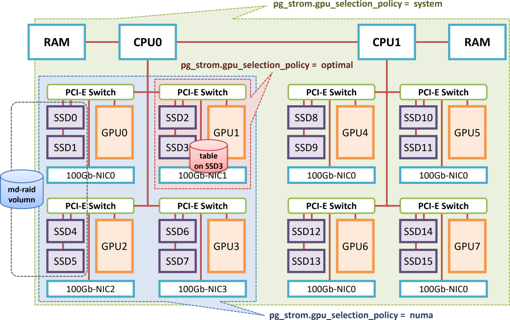

GPUダイレクトSQL
概要
SQLワークロードを高速に処理するには、プロセッサが効率よく処理を行うのと同様に、ストレージやメモリからプロセッサへ高速にデータを供給する事が重要です。処理すべきデータがプロセッサに届いていなければ、プロセッサは手持ち無沙汰になってしまいます。
GPUダイレクトSQL機能は、PCIeバスに直結する事で高速なI/O処理を実現するNVMe-SSDと、同じPCIeバス上に接続されたGPUをダイレクトに接続し、ハードウェア限界に近い速度でデータをプロセッサに供給する事でSQLワークロードを高速に処理するための機能です。
通常、ストレージ上に格納されたPostgreSQLデータブロックは、PCIeバスを通していったんCPU/RAMへとロードされます。その後、クエリ実行計画にしたがってWHERE句によるフィルタリングやJOIN/GROUP BYといった処理を行うわけですが、集計系ワークロードの特性上、入力するデータ件数より出力するデータ件数の方がはるかに少ない件数となります。例えば数十億行を読み出した結果をGROUP BYで集約した結果が高々数百行という事も珍しくありません。
言い換えれば、我々はゴミデータを運ぶためにPCIeバス上の帯域を消費しているとも言えますが、CPUがレコードの中身を調べるまでは、その要不要を判断できないため、一般的な実装ではこれは不可避と言えます。

GPUダイレクトSQL実行はデータの流れを変え、ストレージ上のデータブロックをPCIeバス上のP2P DMAを用いてGPUに直接転送し、GPUでSQLワークロードを処理する事でCPUが処理すべきレコード数を減らすための機能です。いわば、ストレージとCPU/RAMの間に位置してSQLを処理するためのプリプロセッサとしてGPUを活用し、結果としてI/O処理を高速化するためのアプローチです。
本機能は、内部的にNVIDIA GPUDirect Storageモジュール（nvidia-fs）を使用して、GPUデバイスメモリとNVMEストレージとの間でP2Pのデータ転送を行います。
したがって、本機能を利用するには、PostgreSQLの拡張モジュールであるPG-Stromだけではなく、上記のLinux kernelモジュールが必要です。
また、ストレージ装置としてはNVME仕様のSSDが必要ですが、それ以外にもNVIDIA GPUDirect Storageが対応しているストレージシステム（NVME-oFやNFS-over-RDMAで接続されたリモートディスクなど）が利用可能です。 しかし、十分に検証されているとは言い難いため、利用に際しては別途動作検証を行った方が良いでしょう。
初期設定
ドライバのインストール
以前のPG-Stromでは、GPUダイレクトSQLの利用にはHeteroDB社の開発した独自のLinux kernelドライバが必要でしたが、v3.0以降ではNVIDIAの提供するGPUDirect Storageを利用するように設計を変更しています。GPUDirect Storage用のLinux kernelドライバ（nvidia-fs）はCUDA Toolkitのインストールプロセスに統合され、本マニュアルの「インストール」の章に記載の手順でシステムをセットアップした場合、特に追加の設定は必要ではありません。
必要なLinux kernelドライバがインストールされているかどうか、modinfoコマンドやlsmodコマンドを利用して確認する事ができます。
$ modinfo nvidia-fs
filename: /lib/modules/5.14.0-427.18.1.el9_4.x86_64/extra/nvidia-fs.ko.xz
description: NVIDIA GPUDirect Storage
license: GPL v2
version: 2.20.5
rhelversion: 9.4
srcversion: 096A726CAEC0A059E24049E
depends:
retpoline: Y
name: nvidia_fs
vermagic: 5.14.0-427.18.1.el9_4.x86_64 SMP preempt mod_unload modversions
sig_id: PKCS#7
signer: DKMS module signing key
sig_key: 18:B4:AE:27:B8:7D:74:4F:C2:27:68:2A:EB:E0:6A:F0:84:B2:94:EE
sig_hashalgo: sha512
: :
$ lsmod | grep nvidia
nvidia_fs 323584 32
nvidia_uvm 6877184 4
nvidia 8822784 43 nvidia_uvm,nvidia_fs
drm 741376 2 drm_kms_helper,nvidia
テーブルスペースの設計
GPUダイレクトSQLは以下の条件で発動します。
- スキャン対象のテーブルがNVMe-SSDで構成された区画に配置されている。
/dev/nvmeXXXXブロックデバイス、または/dev/nvmeXXXXブロックデバイスのみから構成されたmd-raid0区画が対象です。
- または、スキャン対象のテーブルが
pg_strom.manual_optimal_gpusで明示的に指定されたディレクトリに配置されている。- NFS-over-RDMAなど高速ネットワークを介して接続するリモートストレージを利用する場合は必須の設定です。
- テーブルサイズが
pg_strom.gpudirect_thresholdよりも大きい事。- この設定値は任意に変更可能で、デフォルトは
2GBに設定されています。かつてのPG-Stromよりもかなり小さな値になっています。
- この設定値は任意に変更可能で、デフォルトは
Note
md-raid0を用いた複数のNVME-SSD区画からのストライピング読出しや、高速ネットワークを介したリモートディスクからの読み出しには、HeteroDB社の提供するエンタープライズサブスクリプションの適用が必要です。
テーブルをNVME-SSDで構成された区画に配置するには、データベースクラスタ全体をNVME-SSDボリュームに格納する以外にも、PostgreSQLのテーブルスペース機能を用いて特定のテーブルや特定のデータベースのみをNVME-SSDボリュームに配置する事ができます。
例えば /opt/nvme にNVME-SSDボリュームがマウントされている場合、以下のようにテーブルスペースを作成する事ができます。
PostgreSQLのサーバプロセスの権限で当該ディレクトリ配下のファイルを読み書きできるようパーミッションが設定されている必要がある事に留意してください。
CREATE TABLESPACE my_nvme LOCATION '/opt/nvme';
このテーブルスペース上にテーブルを作成するには、CREATE TABLE構文で以下のように指定します。
CREATE TABLE my_table (...) TABLESPACE my_nvme;
あるいは、データベースのデフォルトテーブルスペースを変更するには、ALTER DATABASE構文で以下のように指定します。
この場合、既存テーブルの配置されたテーブルスペースは変更されない事に留意してください。
ALTER DATABASE my_database SET TABLESPACE my_nvme;
運用
GPUとNVME-SSD間の距離
サーバの選定とGPUおよびNVME-SSDの搭載にあたり、デバイスの持つ性能を最大限に引き出すには、デバイス間の距離を意識したコンフィグが必要です。
NVME-SSD（やリモート読み出しに使用する高速NIC）からの読み出しと、GPUへの直接ロードという処理は、2つの異なるPCI-Eデバイス間でデータを転送するという処理と同義です。PCI-Eバスを一種のツリー状のネットワークであると考えれば、ネットワーク的な距離が近く帯域の太い方がデータ転送に適しているという理解は直感的でしょう。
以下の写真はHPC向けサーバのマザーボードで、8本のPCI-E x16スロットがPCI-Eスイッチを介して互いに対となるスロットと接続されています。また、写真の左側のスロットはCPU1に、右側のスロットはCPU2に接続されています。
一般にCPU内蔵のPCI-Eコントローラよりも専用のPCI-Eスイッチの方が高速ですので、例えば、SSD-2上に構築されたテーブルをGPUダイレクトSQLを用いてスキャンする場合、最適なGPUの選択はGPU-2でしょう。また、同じCPUの配下に接続されているGPU-1を使用する事も可能ですが、NUMA跨ぎとなりCPU-CPU間の通信を伴うGPU-3とGPU-4の使用は避けた方が良いかもしれません。

PG-Stromは起動時にシステムのPCI-Eバストポロジ情報を取得し、GPUとNVME-SSD間の論理的な距離を算出します。
これは以下のように起動時のログに記録されており、例えば/dev/nvme2をスキャンする時はGPU1といった具合に、デフォルトでは各NVME-SSDごとに最も距離の近いGPUを優先して使用するようになります。
$ pg_ctl restart
:
LOG: PG-Strom version 6.0.1 built for PostgreSQL 16 (githash: 1fe955f845063236725631c83434b00f68a8d4cf)
LOG: PG-Strom binary built for CUDA 12.6 (CUDA runtime 12.4)
LOG: PG-Strom: GPU0 NVIDIA A100-PCIE-40GB (108 SMs; 1410MHz, L2 40960kB), RAM 39.38GB (5120bits, 1.16GHz), PCI-E Bar1 64GB, CC 8.0
LOG: PG-Strom: GPU1 NVIDIA A100-PCIE-40GB (108 SMs; 1410MHz, L2 40960kB), RAM 39.38GB (5120bits, 1.16GHz), PCI-E Bar1 64GB, CC 8.0
LOG: [0000:41:00:0] GPU1 (NVIDIA A100-PCIE-40GB; GPU-13943bfd-5b30-38f5-0473-78979c134606)
LOG: [0000:01:00:0] GPU0 (NVIDIA A100-PCIE-40GB; GPU-cca38cf1-ddcc-6230-57fe-d42ad0dc3315)
LOG: [0000:c3:00:0] nvme2 (INTEL SSDPF2KX038TZ) --> GPU0,GPU1 [dist=130]
LOG: [0000:c1:00:0] nvme0 (INTEL SSDPF2KX038TZ) --> GPU0,GPU1 [dist=130]
LOG: [0000:c2:00:0] nvme1 (INTEL SSDPF2KX038TZ) --> GPU0,GPU1 [dist=130]
LOG: [0000:82:00:0] nvme4 (INTEL SSDPF2KX038TZ) --> GPU0,GPU1 [dist=130]
LOG: [0000:c6:00:0] nvme3 (Corsair MP600 CORE) --> GPU0,GPU1 [dist=130]
:
シングルソケット構成のサーバーで、PCI-Eスイッチも搭載されていない、というような小規模システムであれば、自動設定で問題ありません。
ただ、GPUとNVME-SSDが異なるCPUに接続されていたり、高速ネットワーク経由でリモートのストレージ（NVME-oFやNFS-over-RDMAなど）に接続する場合、PCI-Eバス上のストレージの位置を自動では検出できないため、手動でそれらの対応関係を設定する必要があります。
例えば、nvme3にはgpu2とgpu3を、リモートのストレージを/mnt/nfsにマウントしそれをgpu1に割り当てる場合、以下の設定をpostgresql.confへ記述します。この手動設定は、自動設定よりも優先する事に留意してください。
pg_strom.manual_optimal_gpus = 'nvme3=gpu2:gpu3,/mnt/nfs=gpu1'
GUCパラメータによる制御
GPUダイレクトSQL実行に関連するGUCパラメータは4つあります。
pg_strom.gpudirect_enabled-
このパラメータはGPUダイレクト機能の有効/無効を単純にon/offします。デフォルト値は
onです。 pg_strom.gpudirect_driver-
GPUダイレクト実行の利用するドライバを指定する事ができます。
-
heterodb-extraモジュールがインストールされていれば、システムの状態に応じてcufile、nvme_strom、あるいはCPUによるGPUダイレクトSQLのエミュレーションであるvfsのいずれかの値が初期設定されています。当該モジュールがインストールされていない場合、vfsのみとなります。 -
nvme_stromは、以前にRHEL7/8環境でGPUダイレクトSQLを使用するために用いていた独自のLinux kernel moduleで、現在では非推奨です。 pg_strom.gpudirect_threshold- GPUダイレクトSQLが使われるべき最小のテーブルサイズを指定します。
- テーブルの物理配置がGPUダイレクトSQLの前提条件を満たし、かつテーブルサイズが本パラメータの設定値よりも大きな場合、PG-StromはGPUダイレクトSQL実行を選択します。
- 本パラメータのデフォルト値は
2GBです。つまり、明らかに小さなテーブルに対してはGPUダイレクトSQLではなく、PostgreSQLのバッファから読み出す事を優先します。 - これは、一回の読み出しであればGPUダイレクトSQL実行に優位性があったとしても、オンメモリ処理ができる程度のテーブルに対しては、二回目以降のディスクキャッシュ利用を考慮すると、必ずしも優位とは言えないという仮定に立っているという事です。
pg_strom.gpu_selection_policy-
GPUダイレクトSQLを利用する場合、（マニュアルでの設定がない場合は）対象テーブルの位置から選択されたGPUを使用する事になりますが、その選択ポリシーを指定します。指定可能なポリシーは以下の３つです。
-
optimal(default) ... 最も近傍のGPUを使用する
-
numa... 同じNUMAノードに属するGPUを使用する
-
system... システムに搭載されているGPUを全て使用する
-
詳しくは次節で説明します。
GPU選択ポリシー
以下のログはPostgreSQL(PG-Strom)起動時のものですが、システムの認識したGPUとNVME-SSDがそれぞれ表示されています。 各NVME-SSDの行には、デバイスの名称と共に、最も近傍に位置するGPUの一覧とその物理的な距離が出力されています。このサーバは比較的小規模であり、全てのNVME-SSDが等距離でGPU0とGPU1に接続されていますが、大規模なサーバではGPU毎にNVME-SSDとの距離が異なるものも存在します。
本節では、GPUとNVME-SSDとの距離に基づくGPU選択ポリシーについて説明します。
$ pg_ctl restart
:
LOG: PG-Strom version 6.0.1 built for PostgreSQL 16 (githash: 1fe955f845063236725631c83434b00f68a8d4cf)
LOG: PG-Strom binary built for CUDA 12.6 (CUDA runtime 12.4)
LOG: PG-Strom: GPU0 NVIDIA A100-PCIE-40GB (108 SMs; 1410MHz, L2 40960kB), RAM 39.38GB (5120bits, 1.16GHz), PCI-E Bar1 64GB, CC 8.0
LOG: PG-Strom: GPU1 NVIDIA A100-PCIE-40GB (108 SMs; 1410MHz, L2 40960kB), RAM 39.38GB (5120bits, 1.16GHz), PCI-E Bar1 64GB, CC 8.0
LOG: [0000:41:00:0] GPU1 (NVIDIA A100-PCIE-40GB; GPU-13943bfd-5b30-38f5-0473-78979c134606)
LOG: [0000:01:00:0] GPU0 (NVIDIA A100-PCIE-40GB; GPU-cca38cf1-ddcc-6230-57fe-d42ad0dc3315)
LOG: [0000:c3:00:0] nvme2 (INTEL SSDPF2KX038TZ) --> GPU0,GPU1 [dist=130]
LOG: [0000:c1:00:0] nvme0 (INTEL SSDPF2KX038TZ) --> GPU0,GPU1 [dist=130]
LOG: [0000:c2:00:0] nvme1 (INTEL SSDPF2KX038TZ) --> GPU0,GPU1 [dist=130]
LOG: [0000:82:00:0] nvme4 (INTEL SSDPF2KX038TZ) --> GPU0,GPU1 [dist=130]
LOG: [0000:c6:00:0] nvme3 (Corsair MP600 CORE) --> GPU0,GPU1 [dist=130]
:
以下の図は、デュアルソケットでPCI-Eスイッチを内蔵する大規模なGPUサーバのブロックダイアグラムです。
例えばSSD3からデータを読み出してどこかのGPUにロードする場合、PCI-Eデバイス間の距離の観点から最も「近い」GPUはGPU1となります。
この場合、設定パラメータpg_strom.gpu_selection_policy=optimalを指定するとGPU-Direct SQLで使用するGPUはGPU1のみとなり、他のGPUはSSD3上に配置されているテーブルのスキャンには関与しません。

一方、それでは困った事になる場合もあります。
md-raidによりSSD0, SSD1, SSD4, SSD5を論理ボリュームとして構成し、その上にテーブルを構築した場合を考えてみる事にします。
SSD0とSSD1の最近傍GPUはGPU0で、SSD4とSSD5の最近傍GPUはGPU2となり、GPU選択ポリシーがoptimalであると当該md-raid区画には最適なGPUが存在しない事になってしまいます。この場合、対象となるGPUが存在しないためGPU-Direct SQLを利用しないという判断になります。
これを変更するには、pg_strom.gpu_selection_policy=numaを設定します。
このポリシーは同じNUMAノードに属するGPUをGPU-Direct SQLの対象として選択します。
GPU選択ポリシーがnumaである場合、md-raid区画に含まれる全てのSSD（SSD0, SSD1, SSD4, SSD5）にとってスケジュール可能なGPUは共通してGPU0～GPU3となります。そのため、md-raid区画からの読み出しは、これら4つのGPUに均等に分散される事になります。
SSDからGPUへの通信がCPUのPCI-Eコントローラを経由するため、スループットが若干低下する可能性がありますが、PCI-E4.0以降に対応した最近のCPUではそれほど大きな速度差が見られる事は多くないようです。
最後に、pg_strom.gpu_selection_policy=systemを説明します。
このポリシーはPCI-Eデバイスの距離に関わらず全てのGPUをGPU-Direct SQLにおけるスケジュール対象として選択するものです。
例えば極端なケースでは、SSD0～SSD15の全てのGPUを一個のmd-raid区画として構成した場合、全てのSSDにとって共通して「望ましい」GPUというのは存在しない事になります。そこで、CPU-CPU間のデータ通信がある程度は発生する事は織り込んだ上で、全てのGPUをGPU-Direct SQLにおいてスケジュール可能とする選択ポリシーが用意されています。
まとめると、PG-StromはGPUダイレクトSQLで使用するGPUを次のように決定します。
- スキャンすべきテーブルやArrowファイルのファイルパスを特定する。
pg_strom.manual_optimal_gpusに当該パス（または、それを含むディレクトリ）とGPUの組み合わせが記述されていれば、そのGPUを使用する。- 当該ファイルを保存しているNVME-SSDを特定する。md-raid区画の上に保存されている場合は、RAIDを構成する全てのNVME-SSDが対象となる。
pg_strom.gpu_selection_policyに従い、各NVME-SSDにスケジュール可能なGPUのセットを導出する。NVME-SSDが複数存在する場合は、これらの論理積（AND）をスケジュール可能なGPUとする。- スケジュール可能なGPUが存在しない場合、GPU-Direct SQLは使用されない。これには、テーブルがNVME-SSD上に構築されていない場合も含まれる。
諸注意
GPUダイレクトSQLの利用を確認する
EXPLAINコマンドを実行すると、当該クエリでGPUダイレクトSQL実行が利用されるのかどうかを確認する事ができます。
以下のクエリの例では、Custom Scan (GpuPreAgg)によるlineorderテーブルに対するスキャンにGPU-Direct with 2 GPUs <0,1>との表示が出ています。この場合、lineorderテーブルからの読出しにはGPU0およびGPU1に対するGPUダイレクトSQL実行が利用されます。
ssbm=# explain
select sum(lo_revenue), d_year, p_brand1
from lineorder, date1, part, supplier
where lo_orderdate = d_datekey
and lo_partkey = p_partkey
and lo_suppkey = s_suppkey
and p_category = 'MFGR#12'
and s_region = 'AMERICA'
group by d_year, p_brand1;
QUERY PLAN
---------------------------------------------------------------------------------------------------------------
HashAggregate (cost=13806407.68..13806495.18 rows=7000 width=46)
Group Key: date1.d_year, part.p_brand1
-> Gather (cost=13805618.73..13806355.18 rows=7000 width=46)
Workers Planned: 2
-> Parallel Custom Scan (GpuPreAgg) on lineorder (cost=13804618.73..13804655.18 rows=7000 width=46)
GPU Projection: pgstrom.psum(lo_revenue), d_year, p_brand1
GPU Join Quals [1]: (p_partkey = lo_partkey) [plan: 2500011000 -> 98584180 ]
GPU Outer Hash [1]: lo_partkey
GPU Inner Hash [1]: p_partkey
GPU Join Quals [2]: (s_suppkey = lo_suppkey) [plan: 98584180 -> 19644550 ]
GPU Outer Hash [2]: lo_suppkey
GPU Inner Hash [2]: s_suppkey
GPU Join Quals [3]: (d_datekey = lo_orderdate) [plan: 19644550 -> 19644550 ]
GPU Outer Hash [3]: lo_orderdate
GPU Inner Hash [3]: d_datekey
GPU Group Key: d_year, p_brand1
Scan-Engine: GPU-Direct with 2 GPUs <0,1>
-> Parallel Custom Scan (GpuScan) on part (cost=100.00..12682.86 rows=32861 width=14)
GPU Projection: p_brand1, p_partkey
GPU Scan Quals: (p_category = 'MFGR#12'::bpchar) [plan: 2000000 -> 32861]
Scan-Engine: GPU-Direct with 2 GPUs <0,1>
-> Parallel Custom Scan (GpuScan) on supplier (cost=100.00..78960.47 rows=830255 width=6)
GPU Projection: s_suppkey
GPU Scan Quals: (s_region = 'AMERICA'::bpchar) [plan: 9999718 -> 830255]
Scan-Engine: GPU-Direct with 2 GPUs <0,1>
-> Parallel Seq Scan on date1 (cost=0.00..62.04 rows=1504 width=8)
(26 rows)
Visibility Mapに関する注意事項
現在のところ、PG-StromのGPU側処理では行単位のMVCC可視性チェックを行う事ができません。これは、可視性チェックを行うために必要なデータ構造がホスト側だけに存在するためですが、ストレージ上のブロックを直接GPUに転送する場合、少々厄介な問題が生じます。
NVMD-SSDにP2P DMAを要求する時点では、ストレージブロックの内容はまだCPU/RAMへと読み出されていないため、具体的にどの行が可視であるのか、どの行が不可視であるのかを判別する事ができません。これは、PostgreSQLがレコードをストレージへ書き出す際にMVCC関連の属性と共に書き込んでいるためで、似たような問題がIndexOnlyScanを実装する際に表面化しました。
これに対処するため、PostgreSQLはVisibility Mapと呼ばれるインフラを持っています。これは、あるデータブロック中に存在するレコードが全てのトランザクションから可視である事が明らかであれば、該当するビットを立てる事で、データブロックを読むことなく当該ブロックにMVCC不可視なレコードが存在するか否かを判定する事を可能とするものです。
GPUダイレクトSQL実行はこのインフラを利用しています。つまり、Visibility Mapがセットされており、"all-visible"であるブロックだけがP2P DMAで読み出すようリクエストが送出されます。
Visibility MapはVACUUMのタイミングで作成されるため、以下のように明示的にVACUUMを実行する事で強制的にVisibility Mapを構築する事ができます。
VACUUM ANALYZE linerorder;